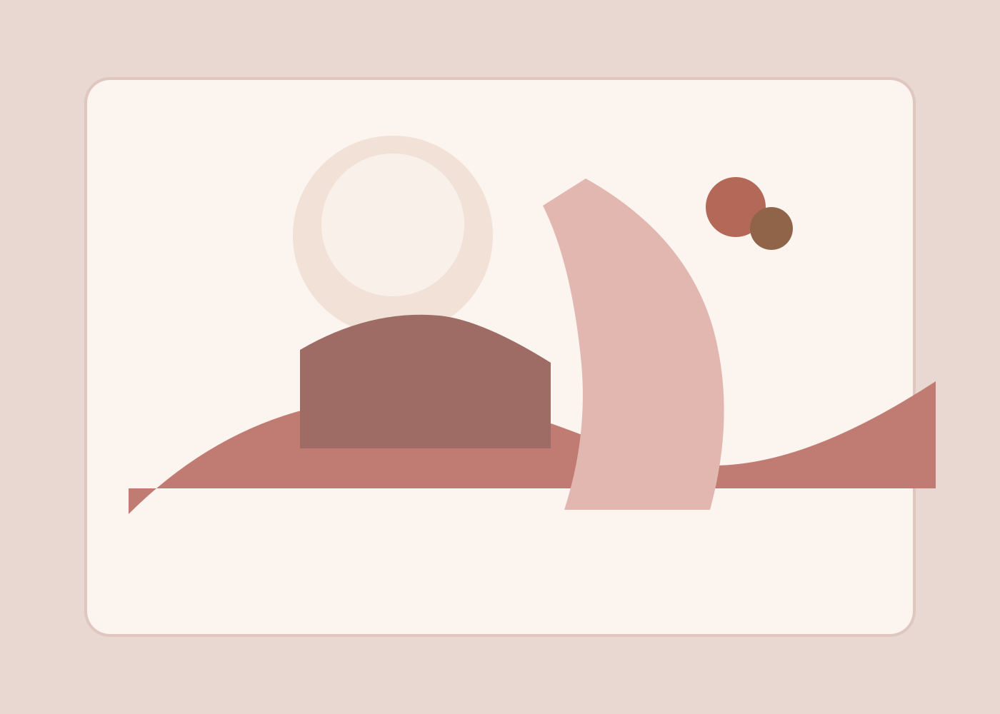

Interior editorial
The Gilded Atrium
A townhouse story balancing amber window light, sculptural furnishings, and reflective surfaces.
Vesper House Studio
We shape image-making around natural movement, warm light, and calm direction so every frame feels polished, intimate, and ready for publication.
Featured work
Each project below was shaped to feel specific to the client while still carrying the studio’s editorial point of view.
Interior editorial
A townhouse story balancing amber window light, sculptural furnishings, and reflective surfaces.

Campaign portraiture
A summer campaign for a skincare label built around movement, linen textures, and a restrained palette.

Wedding story
An intimate ceremony in a glasshouse with candlelight, soft pacing, and documentary detail.
Services
Packages are designed to be clear, collaborative, and useful whether you are building a brand or planning a once-in-a-lifetime event.
From $1,500
Campaign portraits, product stills, and founder imagery for launches that need polish and clarity.
From $3,800
Calm coverage for intimate celebrations, with attention to atmosphere, family portraits, and the details that matter.
Custom quote
Location scouting, moodboards, styling direction, and a final image set ready for web, print, and social.
From $950
Portrait sessions for families, couples, and creative teams who want something elevated without feeling staged.
Process
We align on mood, timeline, wardrobe, and usage so the session starts with a clear creative brief.
Direction stays light and precise. We build from real movement, real light, and real chemistry.
Retouched images are delivered in a clean online gallery with file organization, print guidance, and usage notes.
Style pillars
We design sessions around golden hour, window light, and layered shadow so the final set feels dimensional.
Our posing language is quiet and precise, which keeps the experience relaxed without losing polish.
We look for hand-on-shoulder moments, texture in the clothing, and the unscripted pause between poses.
Testimonials
Vesper House turned our launch into something that felt magazine-ready without losing the warmth of our brand.
Our wedding gallery feels quiet, cinematic, and true to the day. The direction never felt forced.
The portrait session felt guided without ever feeling stiff, and the final images have a quiet confidence to them.
Journal
When no posts are published yet, the section still reads like a finished editorial preview rather than an empty state.
April 2026 · Studio notes
Read the studio journal for guidance on styling, planning, and session preparation.
March 2026 · Location planning
Read the studio journal for guidance on styling, planning, and session preparation.
February 2026 · Field journal
Read the studio journal for guidance on styling, planning, and session preparation.